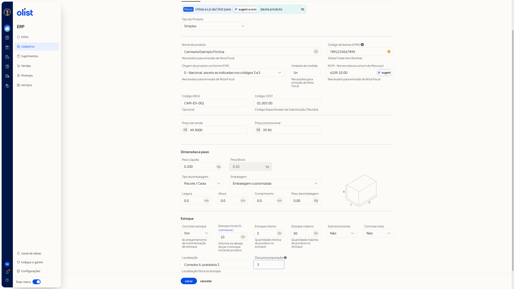

Cadastro de produtos na lista Meus produtos
Descrição
Você cadastra produtos no ERP da Olist pela lista de produtos. Acesse-a no menu lateral, no item Cadastros.
Você pode cadastrar pela tela ou por planilha. Na tela, Incluir produto abre Novo produto na aba Dados Gerais. Na planilha, Mais ações > Importar produtos de uma planilha abre Importação de produtos via planilha, com o modelo para baixar e o envio do arquivo.
Pré-requisitos
- Acesso à lista de produtos no ERP, com Cadastros visível no menu lateral.
- Para importar por planilha, você precisa da permissão de produtos, da permissão de importação de registros e da permissão para incluir e editar produtos.
- Para a planilha, arquivo Excel (.xls ou.xlsx) ou texto (.csv), de no máximo 2 Mb, a partir da planilha modelo.
Importante
- Para emitir nota fiscal, preencha Origem do produto conforme ICMS e Unidade de medida.
- O preço promocional só é importado pela planilha quando a empresa tem o módulo de preço promocional.
- Na importação por planilha, a variação só é vinculada ao produto pai se ele já estiver cadastrado com o Código (SKU) informado.
- Na importação por planilha, o estoque não é atualizado para kits nem para produtos do tipo variações.
- Na importação por planilha, o fornecedor só é vinculado ao produto se já existir um contato cadastrado com o mesmo nome.
Instruções
Pela tela
-
Acesse a lista de produtos no menu lateral, em Cadastros.
-
Clique em Incluir produto.
-
Na aba Dados Gerais, preencha os campos abaixo. Nenhum campo desta aba é obrigatório. O formulário também tem as abas Dados Complementares, Ficha técnica, Anúncios, Preços, Custos e Outros.

Identificação
- Tipo do Produto: opções Simples, Kit, Com variações, Fabricado e Matéria-prima. O padrão é Simples.
- Nome do produto
- Código de barras (GTIN)
- Código (SKU)
Dados fiscais
- Origem do produto conforme ICMS: necessário para emitir nota fiscal. O padrão é 0 - Nacional, exceto as indicadas nos códigos 3 a 5. Há opções de 0 a 8 para origem nacional ou estrangeira e faixas de conteúdo de importação.
- Unidade de medida: necessário para emitir nota fiscal.
- NCM - Nomenclatura comum do Mercosul: no campo, há o botão sugerir o ncm.
- Código CEST: Código Especificador da Substituição Tributária.
Preço
- Preço de venda
- Preço promocional
Peso e embalagem
- Peso Líquido
- Peso Bruto
- Tipo da embalagem: opções Envelope, Pacote / Caixa e Rolo / Cilindro. O padrão é Pacote / Caixa.
- Embalagem: o padrão é Embalagem customizada. A lista também oferece caixas de encomenda, inclusive Flex, CE e variações de tamanho.
- Largura
- Altura
- Comprimento
- Peso da embalagem
Estoque
- Controlar estoque: opções Sim e Não. O padrão é Sim. Indica o acompanhamento da movimentação de estoque.
- Estoque inicial ( E-commerce )
- Estoque mínimo
- Estoque máximo
- Sob encomenda: opções Sim e Não. O padrão é Não.
- Controlar lotes: opções Sim e Não. O padrão é Não.
- Localização: localização física no estoque.
- Dias para preparação
- Clique em Salvar para gravar o produto.
Por planilha
- Acesse a lista de produtos no menu lateral, em Cadastros.
- Acesse Mais ações > Importar produtos de uma planilha.
- No passo 1 da tela Importação de produtos via planilha, clique em baixar planilha.
- Preencha a planilha modelo com os produtos.
- Mantenha o arquivo em Excel (.xls ou.xlsx) ou texto (.csv), com no máximo 2 Mb e a mesma quantidade de colunas do layout de importação.
- Informe cada nível de variação como tipo e valor separados por dois-pontos, com no máximo 5 níveis separados por duas barras verticais (||).
- Consulte Orientações, o link Dicas para preencher corretamente e as perguntas frequentes da mesma tela, se precisar de ajuda no preenchimento.
- No passo 2, clique em enviar planilha para importar o arquivo.
Informações adicionais
Cancelar descarta o rascunho
Cancelar fecha Novo produto e volta à lista de produtos, sem gravar.
O recebimento do ecommerce começa na lista
Na lista, Receber do e-commerce e Mais ações > Receber produtos do e-commerce iniciam o recebimento de produtos do ecommerce.
O produto pode ser criado e atualizado por estes canais
- Interface/Tela: criar sim, atualizar sim
- Lote (Planilha): criar sim, atualizar sim
- API V3: criar sim, atualizar sim
- Lis: criar sim, atualizar sim
Links relacionados
Se precisar de ajuda para cadastrar produtos, fale com o suporte.